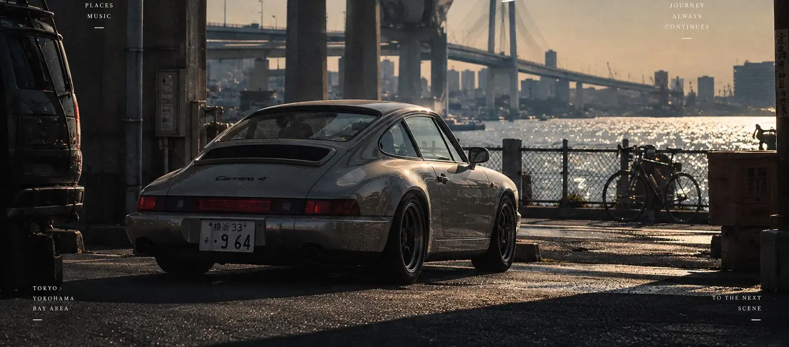
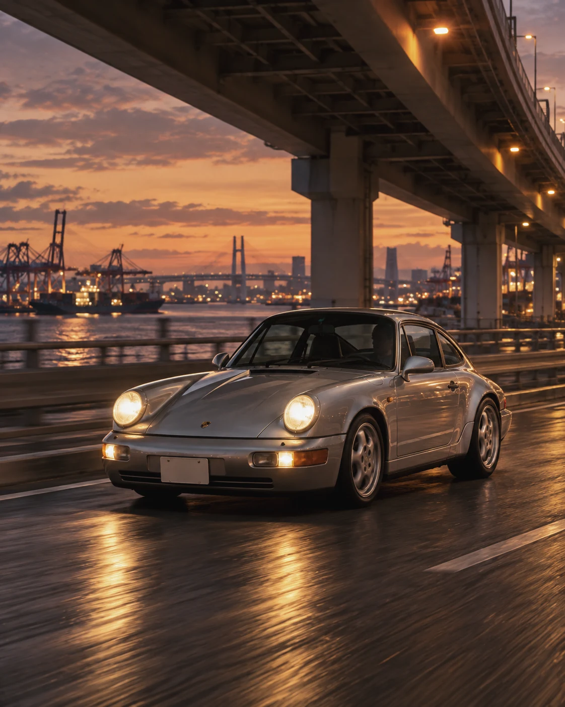
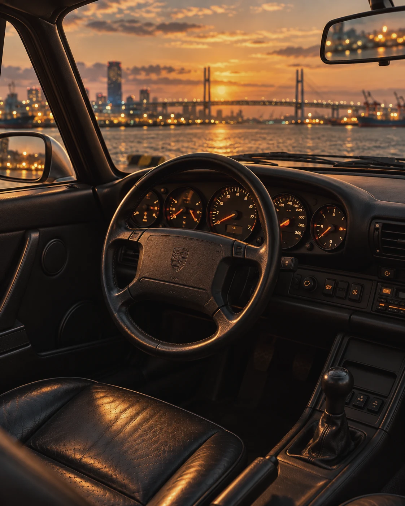
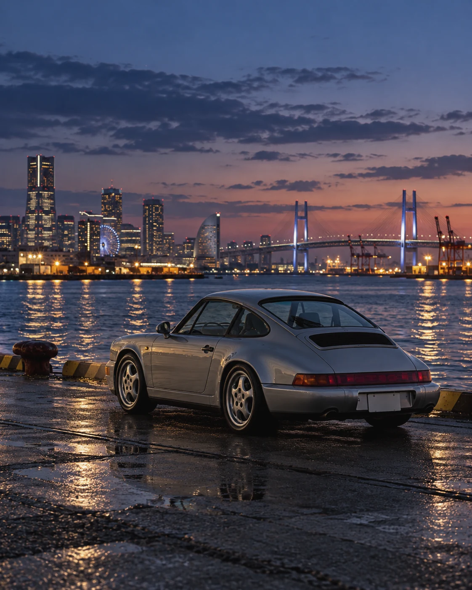
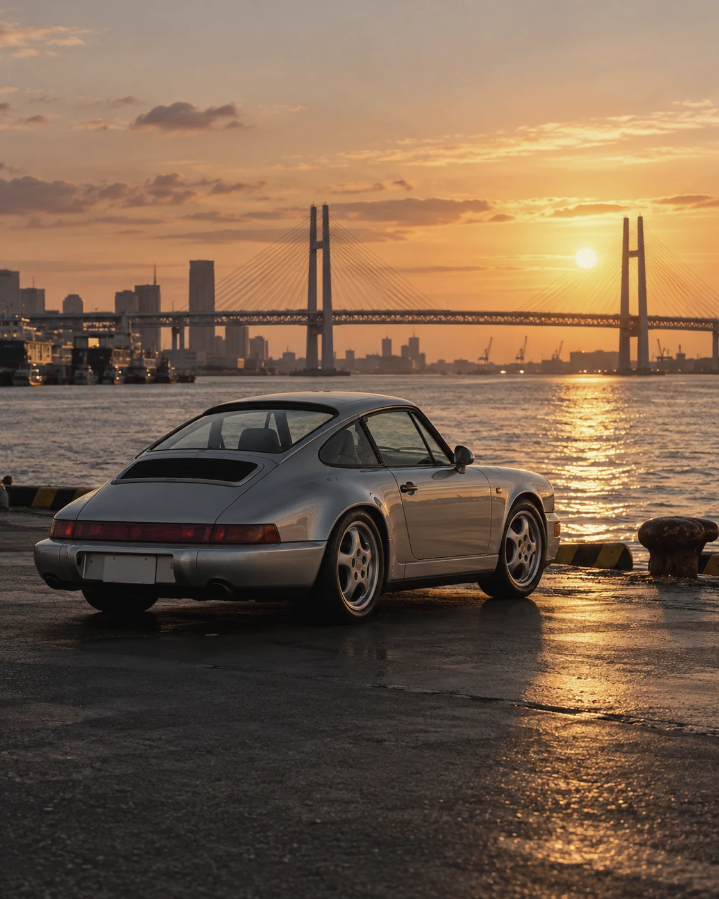

TOHEŞAR / JOURNAL NO. 001AN IMAGINED PLACE · 2026
Yokohama.
For the moments between
one place and another.
SCROLL TO ENTER ↓

001 / THE SCENEYOKOHAMA, JAPAN
VISUAL FICTION
VISUAL FICTION
A scene
remembered.TOHEŞAR / 2026STUDY 001 — 01
remembered.TOHEŞAR / 2026STUDY 001 — 01
01 / THE ARRIVAL
A place that
feels familiar.
NOTES FROM A PLACE
NOT YET VISITED
NOT YET VISITED
처음 가 본 적 없는 장소인데, 이상하게 오래된 기억처럼 느껴지는 풍경이 있다.
항구를 가로지르는 도로, 물 위로 번지는 저녁빛, 그리고 그 아래 잠시 멈춰 선 자동차 한 대. TOHEŞAR의 첫 번째 저널은 그런 장면을 상상하는 데서 시작한다.
A fictional visual study of a city, a car, and the hour before night.
02 / FRAGMENTS OF A SCENELIGHT / FORM



The car stays still.
Everything else
keeps moving.
AN IMAGE ABOUT BEING SOMEWHERETOHEŞAR
YOKOHAMA / 001
YOKOHAMA / 001
Beyond
the car.
자동차가 주인공인 듯 보이지만, 이 장면을 완성하는 건 차만이 아니다. 저녁의 온도, 복잡한 도로의 선, 멀리 반짝이는 물결, 그리고 아주 짧은 정적.
어쩌면 우리가 기억하는 건 자동차의 모습보다 그 차가 놓였던 순간의 공기일지도 모른다.

Behind the scene.
TITLE001 / Somewhere in Yokohama
SETTINGImagined Yokohama waterfront
SUBJECTPorsche 911 (964)–inspired visual study
MEDIUMAI-assisted imagery / editorial direction
JOURNALTOHEŞAR · 2026
CATEGORYAutomobiles / Places / Memory
* 이 작품은 실제 장소에서 촬영한 다큐멘터리 사진이 아닌, AI를 활용해 상상한 장면으로 구성한 비주얼 에디토리얼입니다. 이미지 속 차량 및 공간의 세부 표현은 현실과 다를 수 있습니다.